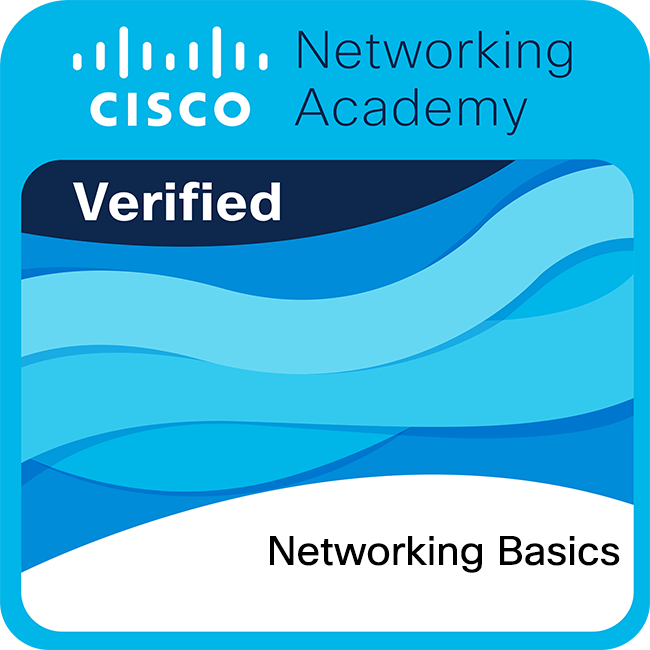

> Tier 2 Technical Escalation Point | Aspiring SOC Analyst
// Recent_Projects
Snort IDS Lab
Network traffic analysis and intrusion detection logs.
Python Port Scanner
Automated security scanning and reconnaissance tool.
> Tier 2 Technical Escalation Point | Aspiring SOC Analyst
Network traffic analysis and intrusion detection logs.
Automated security scanning and reconnaissance tool.
[ SUMMARY ]
Junior Cybersecurity Analyst and current Tier 2 Technical Escalation Point. I bridge the gap between complex technical troubleshooting and proactive digital defense.
SOC Operations, Network Security, and Threat Hunting Labs.
Critical Thinking, Technical Documentation, Crisis Management.
Driven by a "Security First" mindset, I am constantly documenting my progress through hands-on labs and official certifications from Cisco Networking Academy and CINEL.
Configuração de regras personalizadas para deteção de tráfego malicioso e análise de logs em tempo real em ambiente Linux.
Desenvolvimento de ferramenta para scanning de portos e enumeração de serviços para auditoria básica de segurança.
Cisco Networking Academy
Cisco Networking Academy
CINEL (Grade: 20/20)
Professional Proficiency

Networking Basics Cisco Verified Intro to Cyber
Cisco Verified
Intro to Cyber
Cisco Verified
Available for Cybersecurity opportunities and collaborations.